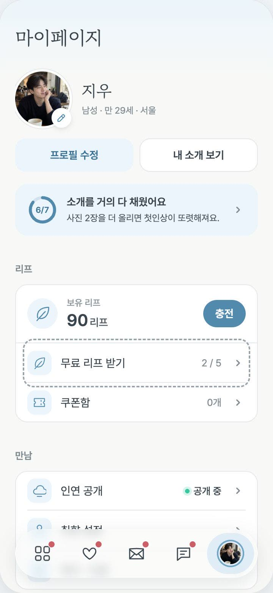
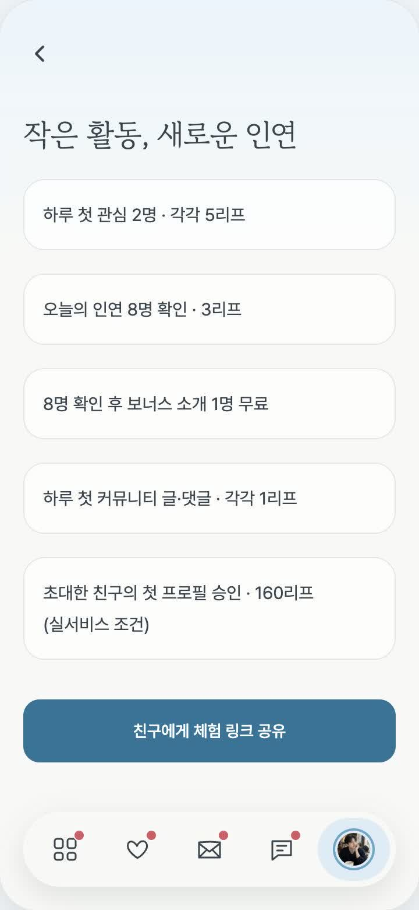
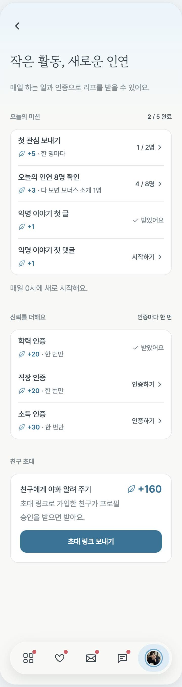
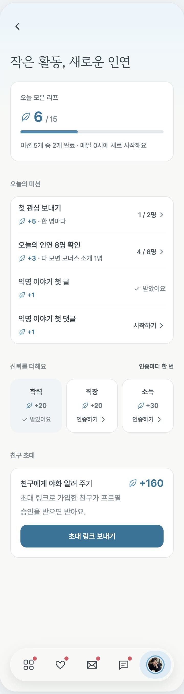

- 마이페이지 리프 카드의 무료 리프 받기 줄 오른쪽에 오늘 미션 진행 2 / 5를 보여 줘요. (링크의 "0 / 5"와 같은 역할, 점선 테두리는 바뀐 곳 표시일 뿐이에요.)
- 리프 지갑 안의 "무료 리프 받는 법" 줄도 같은 이름 무료 리프 받기로 맞추고 같은 숫자를 붙여요.
- 인연 홈 위쪽 리프 표시를 누르면 지갑으로 가는 건 그대로예요.
지금은 글 다섯 줄만 있는 화면을, 팀 링크의 구성(오늘의 미션 → 신뢰를 더해요 → 친구 초대)으로 다시 짰어요. 모양은 우리 마이페이지 목록과 같은 카드 · 줄 디자인을 그대로 썼고, 미션마다 받을 리프와 지금 진행 상황이 보여요. 화면은 실제 시연본 위에 얹어서 찍었어요.
시연 도구 "디자인 비교 → 배경"의 켜기 · 끄기가 이 화면에도 그대로 적용돼요. 이 화면은 원래 그라데이션이 있던 화면이라 끄면 흰 바탕이 돼요.
할 일과 리프가 한 줄 글로만 있어서 어디까지 했는지, 어디로 가서 하는지 알 수 없어요.

세 묶음 모두 마이페이지와 같은 카드 목록이에요. 줄 오른쪽에 진행(1 / 2명), 바로 가기(시작하기 ›), 다 한 건 "받았어요"가 보여요. 묶음 제목 옆에 2 / 5 완료.

맨 위에 "오늘 모은 리프 6 / 15" 막대를 둬서 하루 진행이 한눈에 보여요. 인증은 세 칸 타일로 짧게. 대신 새 모양(요약 카드 · 타일)이 두 개 늘어요.


| 항목 | 팀 링크 | 시안 | 메모 |
|---|---|---|---|
| 호감 보내기 | 5리프 · 0 / 2회 | 첫 관심 보내기 · +5 한 명마다 · 1 / 2명 | 지금 우리 문구 "하루 첫 관심 2명 · 각각 5리프"를 그대로 옮겼어요. |
| 오늘의 인연 확인 | 3리프 | 8명 확인 · +3 · 다 보면 보너스 소개 1명 | 링크엔 없는 "보너스 소개 1명"은 우리 원래 규칙이라 남겼어요. |
| 익명 이야기 | 첫 게시글 1 · 첫 댓글 1 | 같음 | |
| 인증 | 학력 · 직장 · 소득 (20 / 20 / 30) | 같음 · 한 번만 | 지금 우리 화면엔 인증 리프가 없어요. 새로 들어가는 부분이에요. |
| 친구 초대 | 140리프 | 160리프 | 숫자가 달라요. 우리 시연본의 기존 160을 썼는데, 링크대로 140으로 바꿀지 정해 주세요. |
| 초기화 | 매일 0시 | 같음 |